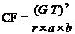
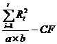

STAM101 :: Lecture 19 :: 2Square Factorial Experiments in RBD – lay out – analysis

2Sqaure Factorial Experiments in RBD
22 factorial experiment means two factors each at two levels. Suppose the two factors are A and B and both are tried with two levels the total number of treatment combinations will be four i.e. a0b0, a0b1, a1b0 and a1b1.
The allotment of these four treatment combinations will be as allotted in RBD. That is each block is divided into four experimental units. By using the random numbers these four combinations are allotted at random for each block separately.
The analysis of variance table for two factors A with a levels and B with b levels with r replications tried in RBD will be as follows:
Sources of Variation |
d.f. |
SS |
MS |
F |
Replications |
r-1 |
RSS |
RMS |
|
Factor A |
a-1 |
ASS |
AMS |
AMS / EMS |
Factor B |
b-1 |
BSS |
BMS |
BMS / EMS |
AB (interaction) |
(a-1)(b-1) |
ABSS |
ABMS |
ABMS / EMS |
Error |
(r-1)(ab-1) |
ESS |
EMS |
|
Total |
rab-1 |
TSS |
|
|
As in the previous designs calculate the replication totals to calculate the RSS, TSS in the usual way. To calculate ASS, BSS and ABSS, form a two way table A X B by taking the levels of A in rows and levels of B in the columns. To get the values in this table the missing factor is replication. That is by adding over replication we can form this table.

RSS = 
A X B Two way table
 B A B A |
b0 |
b1 |
Total |
a0 |
a0 b0 |
a0 b1 |
A0 |
a1 |
a1 b0 |
a1 b1 |
A1 |
Total |
B0 |
B1 |
Grand Total |
ESS= TSS-RSS-ASS-BSS-ABSS
By substituting the above values in the ANOVA table corresponding to the columns sum of squares, the mean squares and F value can be calculated.
| Download this lecture as PDF here |